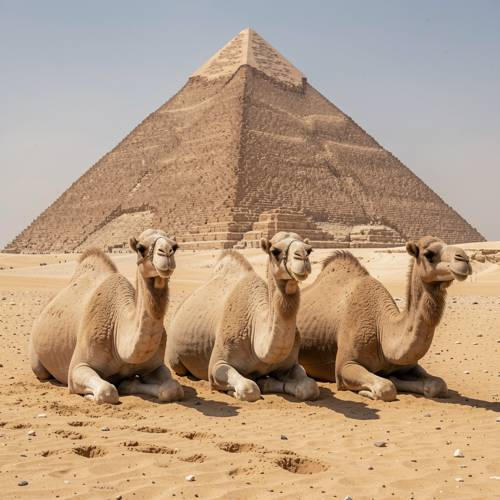
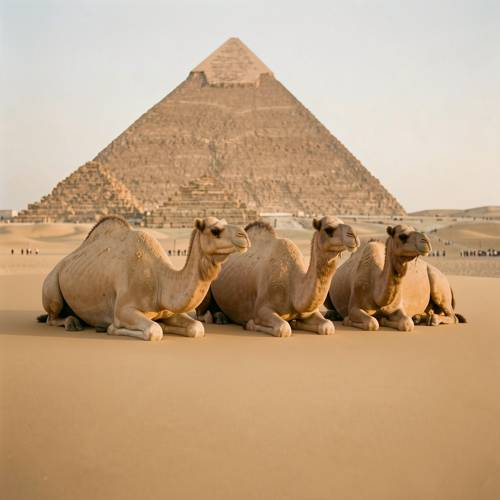
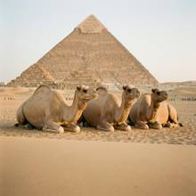
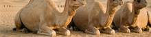
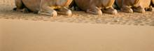
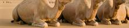
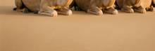

Logical Reasoning — In documentary photography style, three camels are resting in front of
In documentary photography style, three camels are resting in front of the Egyptian pyramid. Their bodies are covered with a thin layer of sand and dust, but there are no footprints on the nearby ground.

Direct — one call, no iteration

Continuum — Qwen3.8-27B + FLUX.2-klein-9B
Judge — Direct
FAILLogical Reasoning — The image depicts three camels, but the ground around them is not smooth; it is covered with numerous indentations and disturbances that appear to be footprints, failing the logical requirement of having camels without any tracks.
PASSAttribute - Quantity — The image correctly shows exactly three camels resting in the sand.
PASSStyle — The image is a high-quality photograph with realistic lighting, sharp details, and a neutral composition, which aligns with the documentary photography style.
FAILGrammar - Negation — The prompt requires "no footprints on the nearby ground," but the image clearly shows many footprints and disturbances in the sand in the foreground around the camels.
PASSWorld Knowledge — A large, recognizable Egyptian pyramid is prominently featured in the background of the image.
Judge — Continuum
PASSLogical Reasoning — The image logically combines the presence of three camels with the absence of footprints on the sand around them. The camels are shown resting on smooth, undisturbed sand.
PASSAttribute - Quantity — The image accurately depicts three camels resting in the desert.
PASSStyle — The image has a realistic quality, with natural lighting and a clear focus on the subjects, which is consistent with a documentary photography style.
PASSGrammar - Negation — The sand in the foreground, immediately surrounding the three camels, is smooth and shows no visible footprints or tracks.
PASSWorld Knowledge — The image correctly features a large, iconic Egyptian pyramid in the background behind the camels.
What the agent did
Thinking
Let me think about this prompt. Documentary photo-style, three camels resting in front of an Egyptian pyramid. The body is covered with a thin layer of sand and dust, but there are no footprints in the nearby ground. The tricky part: "no footprints on the nearby ground" — this is a negative constraint that needs to be explicitly handled. If I generate the image and footprints end up showing, I'll need to remove them. First, let me generate the image with a detailed prompt. Use flux2-klein, omit steps/guidance, and don't set a seed. The prompt should be something like: "Documentary-style photograph, three camels resting in the sand in front of the Egyptian pyramid at Giza, the sand-covered dusty coats of the camels, warm desert light, the foreground sand smooth and undisturbed with no footprints, fine dust particles, natural lighting, photorealistic." Then inspect: check the number of camels (3), that they're resting (lying down), the pyramid in the background, the sand and dust on their bodies, and crucially, check whether there are footprints on the ground. First let me generate the image.
Step 1 — `generate_image`
{
"prompt": "Documentary photography, 35mm photojournalism style, three camels lying down resting on the sand in front of the Great Pyramid of Giza in Egypt, the camels' coats covered in a thin layer of fine sand and dust with clumps settled on their backs and legs, warm late-afternoon desert light, soft golden tones, the foreground desert ground completely smooth and undisturbed with no footprints or tracks, fine grain, natural muted colors, candid unposed mood",
"model": "flux2-klein",
"width": 1344,
"height": 896
}
Result img_0

Thinking
Image contents: Three camels resting in front of a pyramid. Good. However, looking at the ground around the camels, there appear to be footprints (shallow oval depressions) in the sand near/under the camels, and in the foreground there is a row of what look like footprints. The prompt says "no footprints on the nearby ground." I need to zoom in and check the ground area around the camels. Let me try inspecting the ground area around the camels.
Model
The first generation is close — 3 camels resting, pyramid, dusty coat. But I can see footprint-like indentations in the sand around and in front of the camels, which the prompt forbids. Let me zoom in to confirm.
Step 2 — `inspect_region`
{
"image": "img_0",
"roi": [
0,
480,
900,
700
]
}
Result img_1

Thinking
In the cropped image, the ground around the camels is visible. Under the camels and around them, there are faint depressions visible in the sand, and on the left side there are also faint patterns visible. I'll also check the foreground sand (the lower portion of the image, below the camels, roughly y=650–900).
Step 3 — `inspect_region`
{
"image": "img_0",
"roi": [
0,
600,
900,
900
]
}
Result img_2

Thinking
In this crop, the foreground sand looks mostly smooth and undisturbed. However, between the camels and the smooth foreground, the mid-ground strip (roughly y 560–650) shows a pattern of small dots and small depressions — this could possibly be interpreted as scattered pebbles, but it might also look like footprints or hoof tracks. Also, in the first crop, there are indentations visible in the sand around the camels' legs and feet. The prompt explicitly states "no footprints on the nearby ground." To be safe, I should edit and smooth out the ground around the camels. The mid-ground strip with the dot-like pattern may be read as footprints. Let me use edit_image to flatten that area: "Smooth out the sand around the camels, and erase all footprints, hoof tracks, and indentations from the ground. The desert sand should be smooth and undisturbed." This is a localized change, but edit_image should be able to handle it. Alternatively, I could use inpainting with a mask over the ground area. The ground is a large region, and inpainting on a large area can become unstable, but the guidance says to prefer edit_image first. Let's go with an edit_image with a clear instruction: remove the footprints and indentations from the sand around and in front of the camels, making the ground smooth.
Model
The foreground sand is fairly smooth, but there's a strip of small dimples/pebble texture between the camels and the foreground, which reads like footprints. Let me edit the ground to remove the tracks.
Step 4 — `edit_image`
{
"image": "img_0",
"model": "flux2-klein",
"prompt": "Smooth out the desert sand on the ground around and in front of the camels: erase all footprints, hoof tracks, dimples and indentations in the sand so the ground is completely smooth, flat and undisturbed. Keep the camels, pyramid, sky and lighting exactly unchanged."
}
Result img_3
Thinking
The ground is now much smoother. Let me zoom in on the ground around the camels to check whether any footprints remain, and verify that the camels haven't been significantly altered (that they're still three, that they're in a resting posture, and that they're still dusty).
Model
The ground is now much smoother. Let me verify the area around the camels and confirm the camels themselves are unchanged.
Step 5 — `inspect_region`
{
"image": "img_3",
"roi": [
0,
500,
900,
700
]
}
Result img_4

Thinking
The ground around the camels is now smooth, with no footprints or hoof tracks visible. The camels themselves look the same as before — 3 camels, in a resting posture, with a dusty coat. Let me double-check the entire foreground once more to make sure nothing was lost during the edit. Actually, from the full image of img_3, the foreground looks smooth. The camels: 3 are lying down, and sand is visible on their coats (a thin layer of dust, especially visible on the left camel's back). The pyramid is intact. The documentary style is maintained. One more check — the sand between the camels' legs (the dark shadow areas under the camels) — that's shadow, not footprints. No problem. Also, I'll confirm that there are no footprints in the far foreground of img_3.
Model
The ground around the camels is now smooth, with no tracks or footprints visible. As a final check, I'll do one more check of the entire foreground in the edited image.
Step 6 — `inspect_region`
{
"image": "img_3",
"roi": [
0,
600,
900,
900
]
}
Result img_5

Thinking
The foreground is completely smooth, no footprints. The camels are unharmed. All the elements of the prompt are satisfied: - Documentary photography style ✓ (35mm-style, natural lighting, muted color palette) - Three camels resting ✓ (three of them, in a lying-down posture) - In front of an Egyptian pyramid ✓ - Bodies covered with a thin layer of sand and dust ✓ (visible dust/sand on the coat, especially on the camel on the left) - No footprints on the nearby ground ✓ (currently smooth) I'll mark img_3 as the best and stop.
Model
All checks passed: three camels resting in front of the Great Pyramid, documentary-style lighting, a dusty sandy coat, and the surrounding ground is smooth, with no footprints or hoof tracks anywhere in view.
Step 7 — `mark_best`
{
"image": "img_3",
"reason": "All prompt elements verified: documentary style, three camels resting before the pyramid, coats covered in thin sand/dust, and the nearby ground is smooth with no footprints after the edit."
}
Thinking
Completed. The marked image is img_3, which is the final version. Summarizing for the user.
Model
The image is complete. Final result: - **Documentary style** — 35mm photojournalism look with warm late-afternoon desert light, muted natural tones, and an unposed, candid feel - **Three camels resting** in a row, lying down with legs folded - **Great Pyramid of Giza** rising behind them, with dunes and distant visitors for scale - **Sand and dust** visibly settled in a thin layer on the camels' coats, especially along the humps and backs - **No footprints** — the ground around and in front of the camels is smooth and undisturbed (I edited out the initial dimples/track pattern that had appeared in the first pass and verified the fix by zooming in) The final version is marked as the best result.